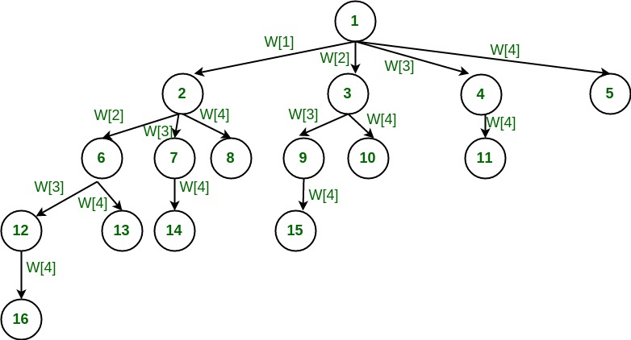

Hamilton Cycle
Problem Statement : Given a set of positive integers, and a value sum S, find out if there exist a subset in array whose sum is equal to given sum S.
Subset Sum Problem | BackTracking Programing
The Subset-Sum Problem is to find a subset's' of the given set S = (S1 S2 S3...Sn) where the elements of the set S are n positive integers in such a manner that s'∈S and sum of the elements of subset's' is equal to some positive integer 'X.' The Subset-Sum Problem can be solved by using the backtracking approach. In this implicit tree is a binary tree. The root of the tree is selected in such a way that represents that no decision is yet taken on any input. We assume that the elements of the given set are arranged in increasing order:
Input:
This algorithm takes a set of numbers, and a sum value.The Set: {10, 7, 5, 18, 12, 20, 15}
The sum Value: 35
Output:
All possible subsets of the given set, where sum of each element for every subsets is same as the given sum value.{10, 7, 18}
{10, 5, 20}
{5, 18, 12}
{20, 15}
Following is the pseudo code of the above algorithm:
Algorithm
subsetSum(set, subset, n, subSize, total, node, sum)
Input: The given set and subset, size of set and subset, a total of the subset, number of elements in the subset and the given sum.
Output: All possible subsets whose sum is the same as the given sum.
Begin
if total = sum, then
display the subset
//go for finding next subset
subsetSum(set, subset, , subSize-1, total-set[node], node+1, sum)
return
else
for all element i in the set, do
subset[subSize] := set[i]
subSetSum(set, subset, n, subSize+1, total+set[i], i+1, sum)
done
End
Backtracking Algorithm for Subset Sum
Using exhaustive search we consider all subsets irrespective of whether they satisfy given constraints or not. Backtracking can be used to make a systematic consideration of the elements to be selected.
Assume given set of 4 elements, say w[1] … w[4]. Tree diagrams can be used to design backtracking algorithms. The following tree diagram depicts approach of generating variable sized tuple.

In the above tree, a node represents function call and a branch represents candidate element. The root node contains 4 children. In other words, root considers every element of the set as different branch. The next level sub-trees correspond to the subsets that includes the parent node.
As we go down along depth of tree we add elements so far, and if the added sum is satisfying explicit constraints, we will continue to generate child nodes further. Whenever the constraints are not met, we stop further generation of sub-trees of that node, and backtrack to previous node to explore the nodes not yet explored. In many scenarios, it saves considerable amount of processing time.
The tree prints all those subsets whose sum add up to given number. We need to explore the nodes along the breadth and depth of the tree. Generating nodes along breadth is controlled by loop and nodes along the depth are generated using recursion (post order traversal).